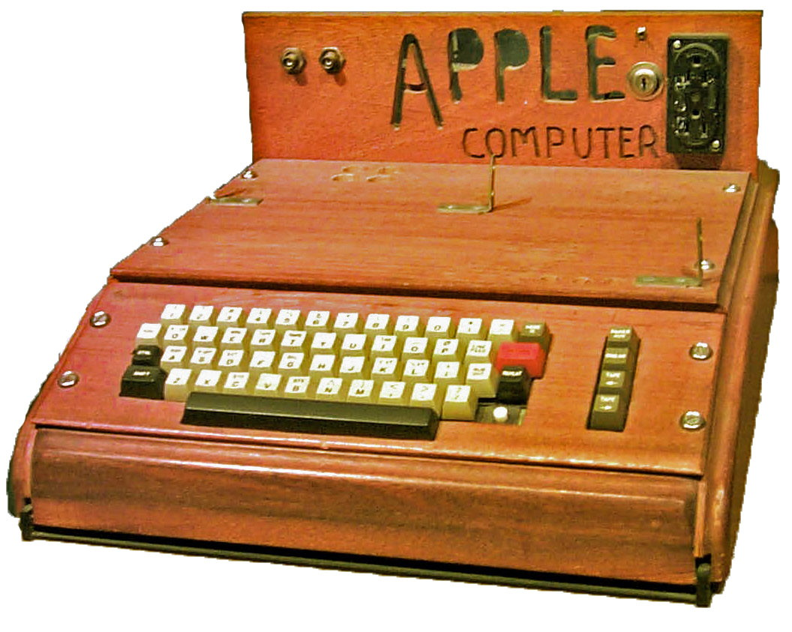
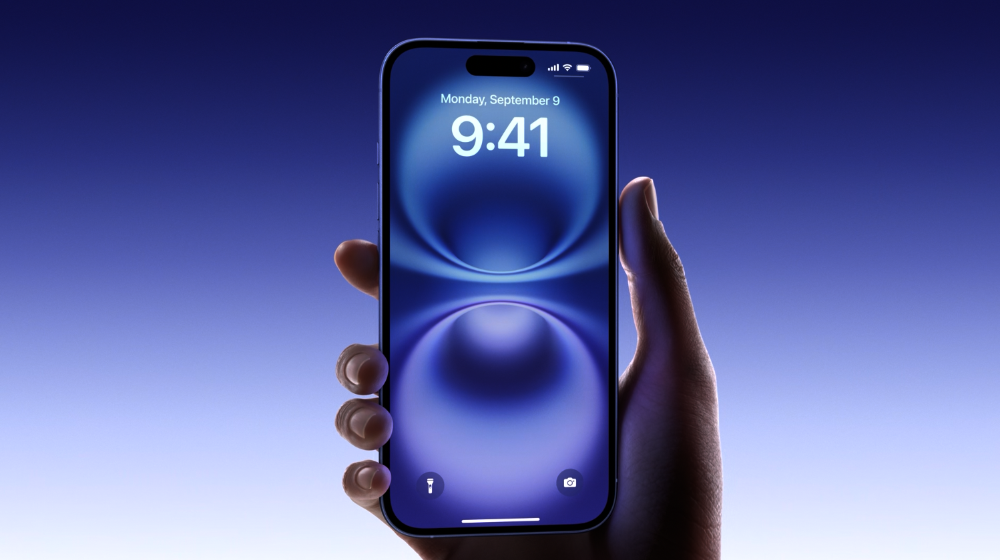

First Product

Best Selling Product

Latest Release
About Apple
Apple Inc. is a globally recognized technology company founded in 1976 by Steve Jobs, Steve Wozniak, and Ronald Wayne. The company started in a small garage in California, where they built the very first Apple computer by hand. Over the decades, Apple has transformed the technology world with its constant innovation, unique design, and attention to detail. From the early Macintosh computers to the revolutionary iPhone, Apple has changed the way people communicate, work, and live. Its ecosystem of devices, software, and services works seamlessly together, providing users with a smooth and secure experience across all products.
| Product | Year Introduced | Category |
|---|---|---|
| Apple I | 1976 | Computer |
| iPhone | 2007 | Smartphone |
Today, Apple continues to expand its influence in various technology sectors — from powerful personal computers and smartphones to wearables and streaming services. The company focuses strongly on sustainability and environmental protection by using recyclable materials and renewable energy in production. Apple’s latest products combine elegant design with powerful performance, while software such as iOS, macOS, and watchOS continues to set the standard for user experience. Below is an overview of some of Apple’s key products that define its success over the years.